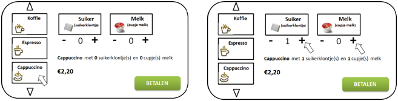
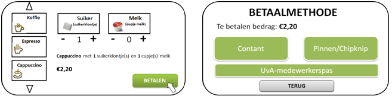
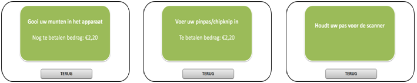
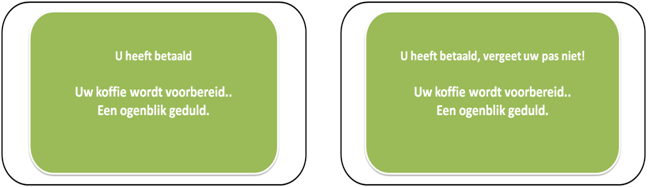

Grafisch ontwerp

Interactie tussen mens en koffieapparaat uitgelegd met behulp van tekst en wireframes.
Als je een koffiesoort aanklikt, staat er op het scherm meteen wat je gaat bestellen en hoeveel het kost. De hoeveelheid suiker of melk kan je daarna nog aanpassen, door op de – of de + te drukken. Je kan natuurlijk niet minder dan de hoeveelheid 0 en niet meer dan de hoeveelheid 5.
Als je wilt betalen, druk je op betalen en kan je je betaalmethode kiezen.
Als je een betaalmethode hebt gekozen krijg je één van de volgende schermen, dit hangt natuurlijk af van je betaalmethode.
Bedrag bij contant betalen veranderd continu als je er munten erin gooit, waarde van de munt wordt van het betalen bedrag gehaald. Als je hebt betaald, krijg je het volgende scherm en word je koffie voorbereid. Als je met je pas betaald, krijg je een waarschuwing dat je je pas niet moet vergeten. Als de koffie voorbereid is, gaat de screen weer naar het beginscherm.
Het concept is zeker haalbaar, tegenwoordig bestaan er al koffieapparaten met een touchscreen (alleen ander interface) en andere touchscreen apparatuur. De database die reageert op de input van de gebruiker en output produceert, zit in principe al in de oude machine. En de toegevoegde muntengleuf en pin-apparaat bestaat ook al, dus die kunnen gewoon geïmplementeerd worden.
De interfaces van de koffieautomaten op het Science park kunnen een stuk beter. De huidige koffieautomaten maken gebruik van een relatief ouderwets knoppenpaneel. Door opties te selecteren met dit knoppenpaneel vinden er veranderingen en keuzes plaats op het scherm er naast.
Dit kan veel efficiënter door gebruik te maken van een touchscreen. Hierdoor verlaag je de kosten. Ook is het voor de gebruiker duidelijker om te zien wat er gebeurd op het scherm. De gebruiker ziet gelijk zijn verandering naar aanleiding van zijn keuze op het scherm met zijn vinger. Dit geeft een groter gevoel van controle op het maken van een keuze.
Voor het Touchscreen zal een resistief scherm gebruikt worden. Deze is goedkoper om te fabriceren dan een capacitatief scherm, en is ook beter bestand tegen stof en vocht. Ook kan deze gebruikt worden door mensen die bijvoorbeeld net uit de kou van buiten komen en hun handschoenen nog aan hebben. Iets dat met een capacitatief scherm onmogelijk is. Deze reageert namelijk alleen op de huid van een mens, terwijl een resistief touchscreen simpelweg op de druk op van een bepaald punt op het scherm reageert.
Voor het operating system van de koffie automaat kan gekozen worden voor een Linux distributie, Android of een embedded Windows oplossing. Het handigst is om te kiezen voor een Linux distributie. Deze kan namelijk een stuk makkelijker opgezet worden in vergelijking met een Windows Embedded systeem of een Android systeem, Linux is het meest makkelijk aan te passen voor een specifieke software oplossing. Linux ondersteunt namelijk een groot aantal programmeertalen, waarmee gemakkelijk een interface voor een koffie automaat mee kan worden gebouwd. Bij Android en Windows is dit beperkter. Een ander nadeel van Windows is dat de licentie hiervan geld kost.
Veel software ontwikkelaars hebben ervaring met C/C++ of JAVA. Dit zijn twee programmeertalen die over het algemeen goed ondersteund worden door Linux distributies. Vooral met JAVA kan gemakkelijk een snelle mooie interface ontworpen worden voor het gebruik in embedded systemen zoals de koffie automaat. Ook het programmeerwerk is relatief eenvoudig. Er kan simpelweg gebruik gemaakt worden van enkele if/else /elif – statements voor de keuze van koffie/suiker/melk etc. Hetzelfde geldt voor de manier van betalen. Een voorbeeld : De gebruiker is klaar met de keuze van koffie en drukt op de betaalknop (If gebruiker selecteert betaalknop -> ga naar betaalscherm). Vervolgens worden de betaal mogelijkheden uitgelicht. Stel er zijn 3 mogelijkheden, dan kan dit er in zo uit zien : If gebruiker selecteert betaalkeuze 1 -> voer uit, elif, gebruiker selecteert betaalkeuze 2 -> voer 2 uit, elif gebruiker selecteert betaalkeuze 3 -> voer 3 uit, Else : niks/wacht op input
Omdat alle onderdelen van dit concept al bestaan, is het zeker haalbaar om dit concept te produceren.